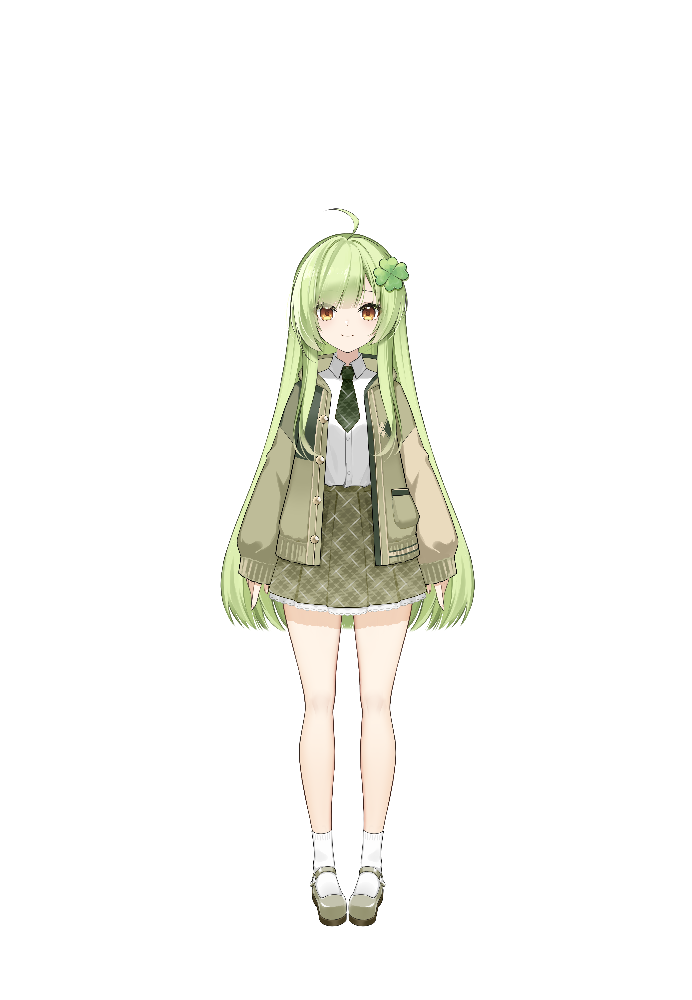

PORTFOLIO / 2026
嗨，我是 Akuru。專注於視覺設計、互動內容與數位創作，喜歡讓每個畫面都有自己的性格。

HELLO, I AM AKURU
01 / ABOUT ME
我是一名喜歡探索新媒體的創作者。從企劃、視覺到互動製作，我享受把模糊的想法慢慢打磨成完整的作品。
02 / SELECTED WORK
角色視覺與設定設計
動態與互動內容製作
數位敘事與網頁專案
03 / LIVE2D
這是我的 Live2D 模型。移動滑鼠或觸控螢幕，看看角色會如何回應你。
正在載入模型…
04 / CONTACT